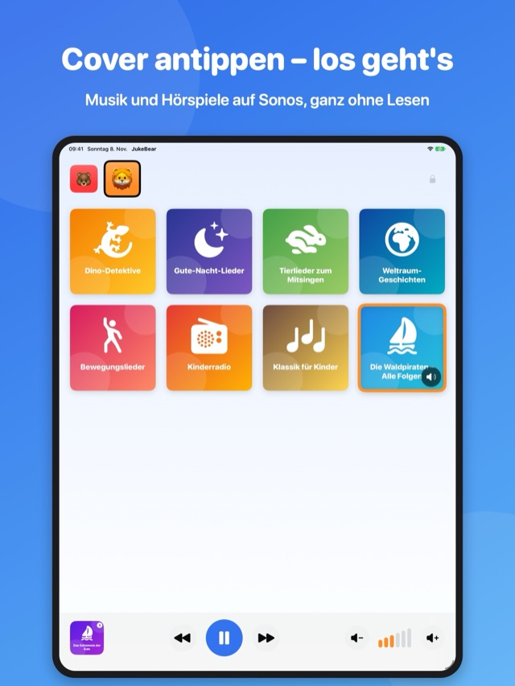
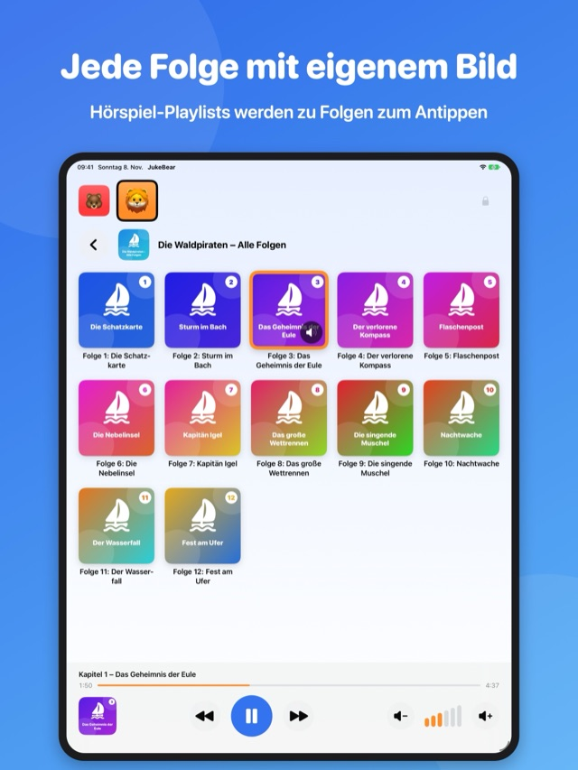
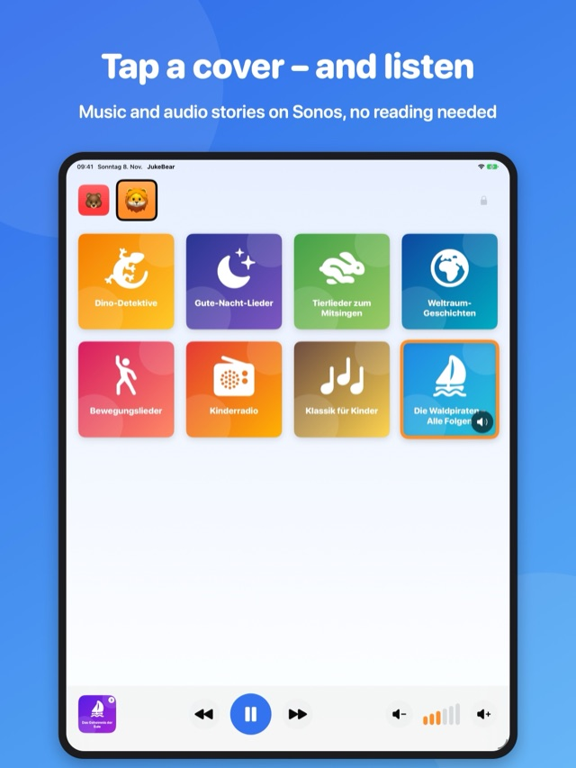
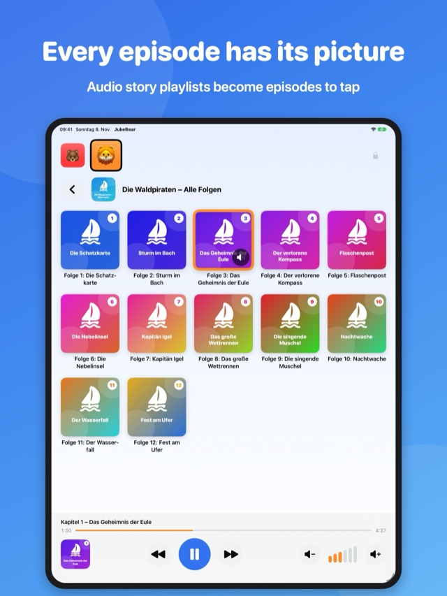
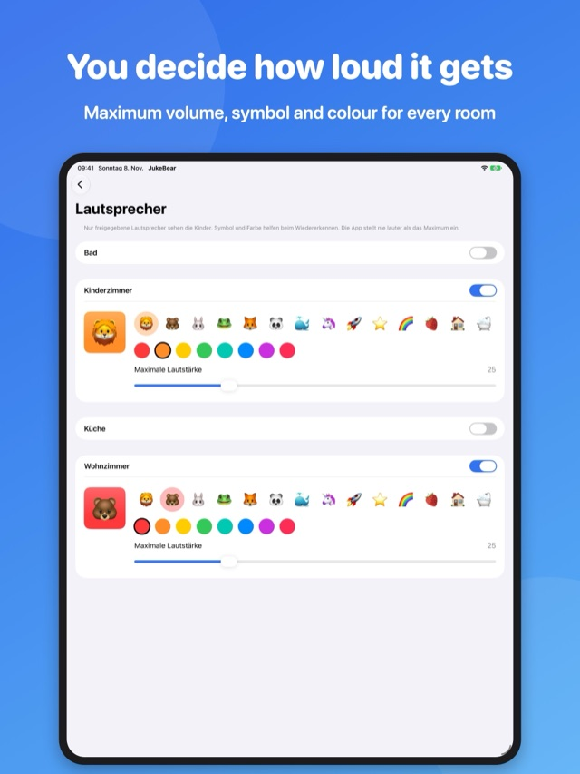
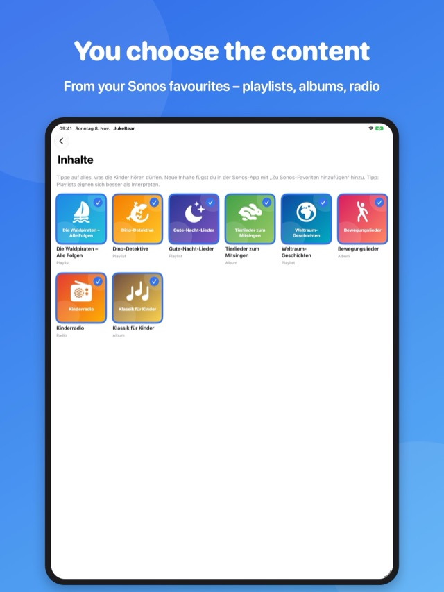

Für KinderGroße Cover statt Text, riesige Tasten für Play, Pause, Weiter und Lautstärke.
Für ElternGeschützter Elternbereich mit PIN. Ihr gebt Alben, Playlists, Hörspiele und Sender frei.
Lautstärke im GriffMaximale Lautstärke pro Lautsprecher – JukeBear regelt automatisch zurück.
Nur eure LautsprecherDie Kinder sehen nur die Räume, die ihr freigebt – erkennbar an Tier-Symbol und Farbe.
So sieht es aus
JukeBear läuft auf dem iPad und auf dem iPhone – auch ein ausgedientes iPhone wird so zur Kinder-Jukebox.


So funktioniert es
- In der Sonos-App Inhalte als Sonos-Favoriten speichern (z. B. von Spotify, Apple Music oder TuneIn).
- In JukeBear eine Eltern-PIN festlegen und Inhalte sowie Lautsprecher freigeben.
- Optional das Gerät mit „Geführter Zugriff“ auf JukeBear beschränken.
Voraussetzung: iPad oder iPhone mit iOS 17 oder neuer und Sonos-Lautsprecher (S2) im selben WLAN.
In English
JukeBear turns your Sonos system into a jukebox for little ones: kids tap a cover and their music or audio story starts – no reading needed. Parents choose the content, the speakers and the maximum volume in a PIN-protected parent area. Works on iPad and iPhone (iOS 17 or later) – even an old iPhone becomes a jukebox for the kids.



